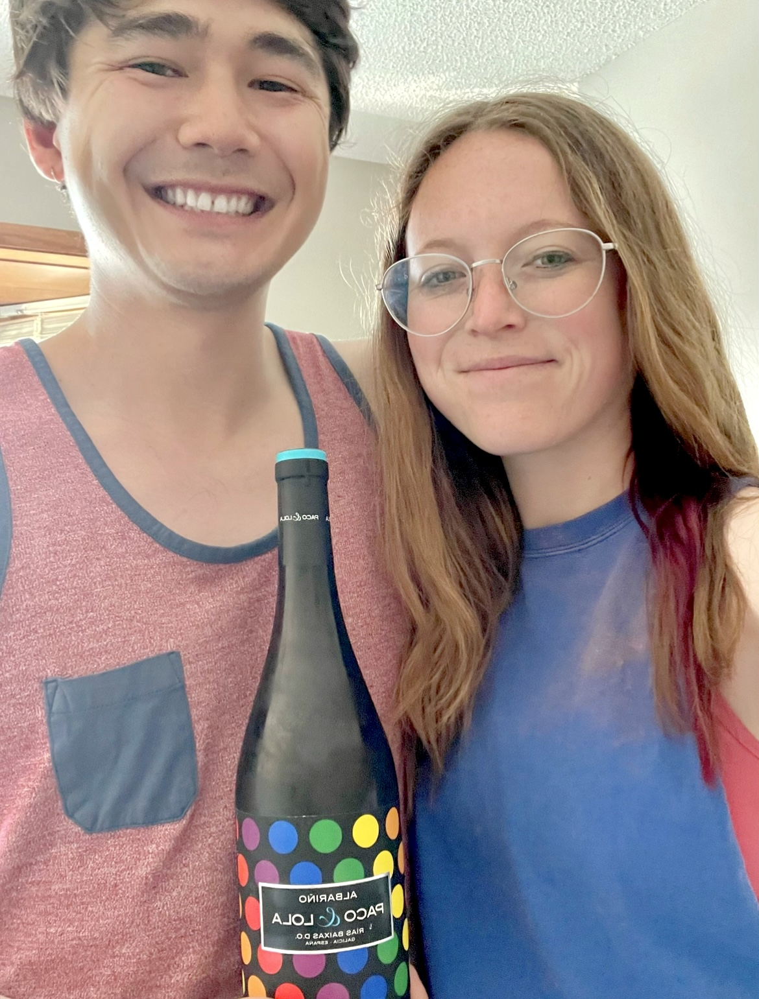

Albariño
What is it?
Albariño (or Alvarinho) is a white grape grown along the Iberian Peninsula [1]. The alternative spelling is the spelling used in Portugal. Both of the names for this grape originate from the Latin word albo/albus, which means "white". Our particular wine was made from grapes grown in the Rías Baixas region of Spain, in Galicia. The Rías Baixas region is a DO region, or Denominación de Orixe, which is the designation given to wines of certain quality and growing constraints in Spain.
Primary flavors include lemon zest, grapefruit, honeydew, nectarine, and saline [1]. As a light, coastal wine, suggested pairings are all things related to the sea such as fish tacos, seafood risotto, and shellfish. Other suggestions are soft cheeses like burrata, semi-hard cheeses like salty feta or gouda, and items with fresh green herbs like salsa verde [2].
We got this wine at a Costco in La Vista, Nebraska, last week. We paired this wine with ramen and Hawaiian Ahi Tuna Poke from Grey Whale to try to get some essence of the sea.
Molly's Rating and Tasting Notes
6.0. I get some lemony notes on the nose. But be warned - it smells very different than it tastes. I can't really describe the flavors in the mouth - something a little sharp (maybe celery) and not that sweet. The finish is very salty/salinic. It leaves the feeling of having licked a salt cube or Himalayan salt lamp. All in all, I'd call this wine something I'd drink it if I was handed it, but it's not something I'd go seeking out.
Ryan's Rating and Tasting Notes
5.9. Uninspiring. On the nose I get small hints of lemon and green apple. There are also some dark, sweet notes as well, akin to caramel. Upon tasting, it is quite acidic without a whole lot of substance. There's not much depth or nuance, but I'm picking up on some lemon, tart apple, and something vegetal (possibly green onion). The initial taste is not so bad, but when the aftertaste comes in, it takes a turn for the worse. It is bitter and salty, and leaves behind a taste similar to artificial sweeteners (without the sweetness). It's not a very pleasant sensation, and to make matters worse, it lingers in the mouth and overstays its welcome. On the brightside though, it is light and zippy and wakens the senses. Overall, not a great wine, but a drinkable one.
References
[1] Madeline Puckette and Justin Hammack. Wine Folly: The Master Guide. Avery - A Penguin Imprint, New York, NY, 2018.
[2] "Albariño/Alvarinho." Wine Folly. https://winefolly.com/grapes/albarino/. Accessed: June 2023.
[3] J. Robinson (2006).
Wines we haven't finished
- Chenin Blanc (Lubanzi) - Week 9
- Grechetto - Week 15
- Montepulciano d'Abruzzo - Week 19